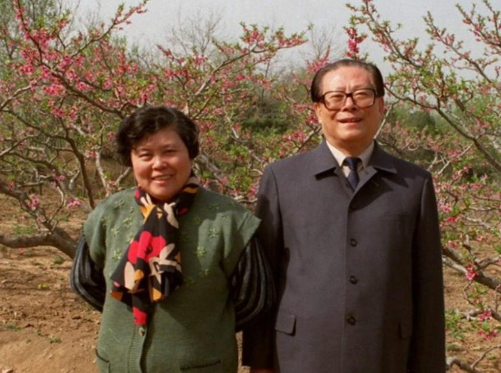

出生于1926年的长者，在扬州老家按虚岁算，过了这个农历年就要90了，他与发妻的爱情长跑也进入了第65个年头了。与进城就抛发妻娶女学生的早期领导人以及浸淫于二婚的红领巾一代领导人的比，长者的这个爱情长跑实属难能可贵。2001年的1月6日，长者曾经把昔日同窗好友邀到中南海的家中，饭毕，一番吹拉弹唱之后，长者才神秘的透露这一天是他们的金婚纪念日。于是，在这天撰文一篇回顾长者的爱情。

他们是“表兄妹”
自古表兄妹情深，这要从长者的身世说起，长者六叔无子，于是从小便被过继到了叔叔家，六叔的老婆叫王者兰也就成了长者的养母，而王冶坪则是王者兰胞妹的女儿，这样本来是姑妈的王者兰此时变成婆婆，本来是表哥的长者变成了丈夫。所以长者与王这一对从小便在一个大家庭长大，就像汪啸风与水笙、慕容复与王语嫣一样，是青梅竹马的表兄妹组合。
长者自称，「在扬州垂柳拂荡的运河边上一同玩耍的年少时代起」就深恋女友，一份官方报导也说他们「从小之间就产生一份纯洁的感情」。王性格恬淡、不好张扬，「他（长者）兴趣广泛，聪明开朗，有组织能力，喜欢炫耀，而她性格内向，随和友好，和蔼可亲」，这样的搭配李银河也从恋爱心理学中做出解释，能彼此吸引的「一种是高度契合的，另外有一种就是差异特大的，他也有他的吸引力。」
王有着与长者类似的家庭背景，其父留过美，英语流利，并在扬州（一说在上海）拥有一家工艺品厂，家境尚可。45年长者到上海读书那年，王也考入上外，学习之余，也会经常到王家串门。长者的妹妹在回忆三哥与表姐的恋爱时说：“三哥从南京转到上海交大以后，他经常去看望我的外婆，和我的舅舅—也就是王的父亲。我外婆和舅舅都非常喜欢三哥。1949年，当我母亲搬到上海时，她欣喜地看到三哥和她的侄女正在谈恋爱。”
公子遇良人，一切都是那么顺利成章，没有「我顽固地爱你和顽固地不爱你」的这种波折，很快长者便于这位经常去厂里去找他玩的大眼睛姑娘举办了婚礼。他们的婚礼是在当时四马路上的杏花楼举行的。杏花楼是百年老店， 大约100名宾客参加了那场历时3小时的婚礼，参加婚礼的除了有几个特别要好的交大同学，主要是男女双方的亲友。想起前段时间朋友圈铺天盖地转你包跟你麻结婚从简只办一桌答谢亲友，你倒是跟我说说，谁二婚大摆筵席啊。
漫长的异地恋
恋爱易，生活难，纵观长者65年的爱情长跑里，聚少离多是主旋律，50年底结婚不久，55年长者赴苏进修一年，结束旋即从艳阳里大雪纷飞的上海来到寒夜里四季如春的长春汽车厂，这一呆就是8年。62年长者调回到上海工作，那段时间是两人的最好的时光，告别了东北的天寒地冻，「他和妻子每天自己带午饭，送子上学，坐公共汽车上班。」。他们也在上海有了自己的住处，在现在的曹杨新村，恬静幸福的生活没有就这样定格，好景不长，小家庭的幸福被卷进了大时代的洪流。
66年5月乌云压城山雨欲来，这个时间点也是他们长达20年两地分居的开端，巧合的是长者调任湖北远离夫人开始异地恋的同时，在紧紧相邻的湖南一隅，一位后来大红大紫的民族歌手出生了，未来若干年长者也奠定了逢单数代领导人与娱乐圈人士的渊源。85年，长者终回上海任职，20年了，他的发型开始往后梳了，裤子也越穿越长，背影陌生到让王觉得见到他是上个世纪的事，但当长者开门进来时，她就好像自己刚刚下班，只在楼门口等了他五分钟而已。
结束异地恋的喜悦不仅限于可以第二杯半价了。王有着上海人的精明持家，几乎从未送给长者礼物，但就在长者重回上海与家人团聚这一时期，她大大破了一回例。从长者上大学时起，他就梦想能够自己拥有一架钢琴。但那时经济上要负担一大家人，买钢琴是不可能的。「经深思熟虑的谋划，王从银行里提出了所有积蓄，又向亲朋好友借了些钱，勉强凑了2000块钱，买了一架聂耳牌钢琴。」后来长者调任北京的第一年，王没有随去，在中南海的温顺长夜里，陪伴长者的就是这架钢琴。
曾经的“第一夫人”
和永远单曲循环的长者不一样，去北京之后的王冶坪迅速老去，从不盈一握到皱纹密布，但长者既不像革命先辈和后生那样把娶嫩妻当作男人的本事，依然守着略显暗淡却默默操持家庭的妻子，也不像胡兰成那样「娶了之后，也并不带出来，只留在老家侍奉母亲」。94年之后长者每次出访都会带着这位槽糠之妻，也是这一年，共产党的媒体被要求可以适当宣传第一夫人参加的外事活动。
94年那次出访俄罗斯、乌克兰和法国的10天时间里，王冶坪扮演了中国第一夫人的角色，仪态端庄，泰然自若。这也是建国后第二次最高元首携夫人出访。同时，西化和海派的长者对王的衣服也提出了要求，在长者访问香港期间，王淡雅的着装得到了当地著名时装设计师张天爱的好评。97访美期间，王则穿着“一条蓝色开衩连衣裙，外罩一件深紫色天鹅绒收腰外衣”。不落希拉里下风。
尽管有身体上的病痛和理上的不适应（王患有严重的颈椎病，所以她头一直略偏15°）——「在巴黎的国宴上，她忍受病痛长达3个多小时」，但她勇敢地时刻伴随在长者身边。深受感动的长者也以一种体恤式的温柔温暖她，在那次巴黎国宴中，他直接用英语低声对时任总统密特朗说：“我夫人长途旅行很疲乏，有些头晕。能不能请你准备一把椅子，让她坐一坐？”密特朗立即让人搬椅子，并且一下子搬来两把。一老友私下里对长者说：“你和妻子一起出国访问的时候，你好像总是抓着她的胳膊拽着她走。在电视上，这样看起来有点别扭……”长者回答说：“我怎么办？要是我不扶着她，她就走不动。”这位老友感慨地说，她的丈夫感到高兴，不仅是为了中国的形象，而且他真的喜欢见到多年来与他患难与共的妻子在国际舞台上受到应有的尊重。
感情之事最难评说，但长者这如邻家大爷大妈式普普通通的爱情故事还是在晦暗的人海里闪闪发光，让人平添敬意。他们都到生活里去了，那里人口众多。